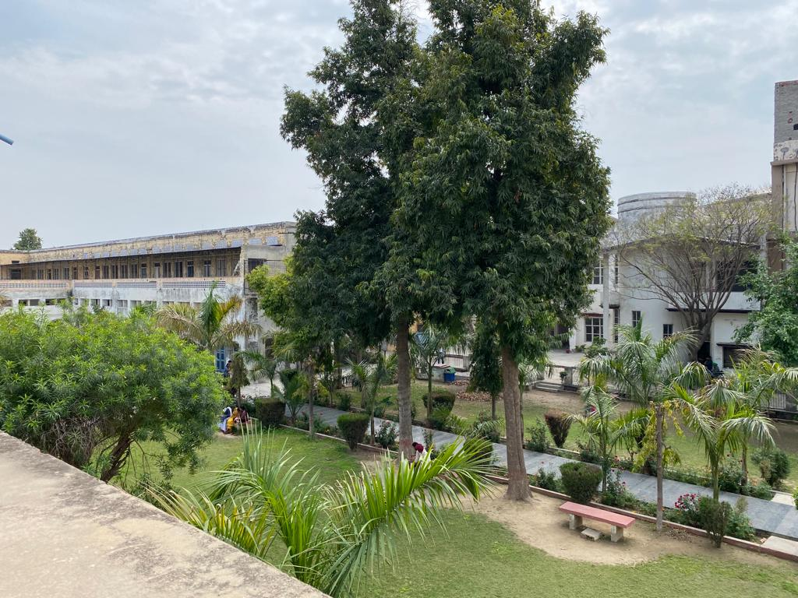

M.Sc. (Mathemetics)
Eligibility For Admission To M.Sc. (Mathematics)
Admission is open to candidates having Bachelor's Degree in Science or Arts with Maths with 50% marks in the aggregate or with 45% marks in the subject of Mathematics,
There will be four semesters, Each semester having five theory papers.MSc Mathematics is a 2 year postgraduate course in Mathematics dealing with providing in-depth
knowledge of advanced and applied mathematics like geometry, algebra, calculus, number theory, dynamical systems, differential equations and prepare them for various
research activities.
PGDCA
Eligibility For Admission To PGDCA (Post Graduate Diploma In Computer Applications)
The duration of the said Diploma will be of one year having two semesters. This course is ideal for the students with no previous knowledge of Computer.
It will give them an understanding of the basic concepts of Computer along with other skills which enable them to enter into IT industry. Eligibility:
Graduation in any stream with 50% marks in aggregate.
Subjects Offered 1st Sem
1. Computer Fundamentals (Lab Work)
2. Database Management System (Lab Work)
3. Computer Programming Using c
4. Data Communication & Network
2nd Semester
1. Object Oriented Concept Using Java
2. Web Technologies.
3. Software Engineering. (Lab Work)
4. Computer Based Accounting. (Lab Work)
5. Project Work

Add-On Courses
To Be opted in 2nd semester of 1st year level only.
The University Grants Commission under the modern scenario of globalization of education and economy has reoriented and reformed its policies and programmes.
Such a step has been undertaken in order to make the current Indian Higher Education System more career oriented.
An innovative flexible system of certificate/ diploma/ advanced diploma has been introduced.
Moreover the college already runs Introduction to Computer Science as an additional subject at 1st Year Level.
This would be parallel to conventional BA/B.Sc./B.Com. degree. The primary objective of the introduction is to make the student market oriented by enhancing those skills which have practical utility for jobs.
The college has offered three Add-on-Courses for students at 1st year level.
The college will only start the course if the number of students opting the course atleast 20. The career oriented courses for to the undergraduate student are as under:
1. Computer Based Accounting
2. Fashion Designing
3. Insurance Business
4. Air Conditioning & Refrigeration
5. Soap & Detergent Making


- 